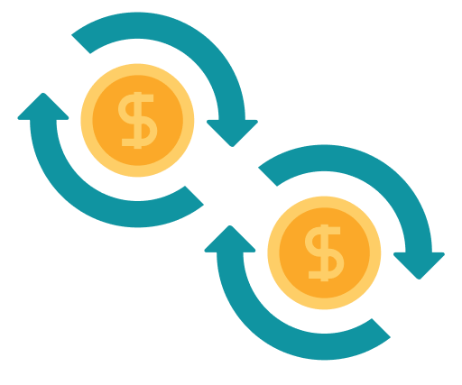
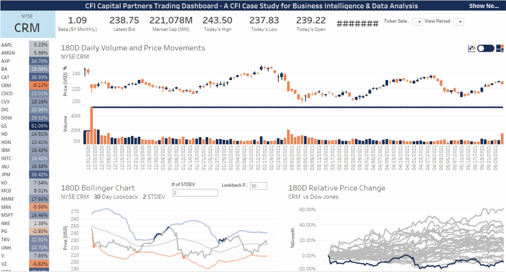
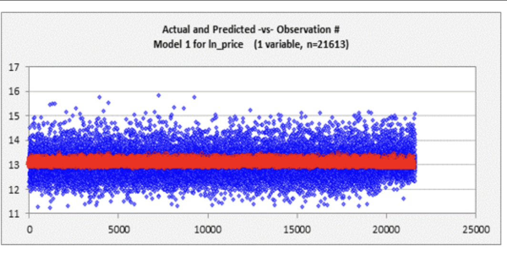

A precision-crafted tool that harnesses advanced data science to provide J.P. with accurate and timely forecasts of stock prices. It's a dynamic asset, adapting to market shifts, empowering J.P. (the client) to make informed investment decisions in an ever-evolving financial landscape. With this model, the client gained a strategic edge in navigating the complexities of the stock market made possible with the use of Monte Carlo Simulation.

Unlock the power of your financial data with my expertly crafted financial statement analysis in Power BI. This visually stunning and interactive reports provide a deep insight into your company's financial health, enabling data-driven decision-making.
As a skilled Power BI professional, I bring expertise in data modeling, DAX calculations, custom visuals, and dynamic dashboards to deliver actionable financial insights. My proficiency ensures your financial statements come to life, providing clarity and empowering your business strategy.

This project harnesses the power of machine learning to predict loan defaults accurately. By collecting, cleaning, and training the data, it equips lenders with a valuable tool for early risk identification and enhanced decision-making. Ultimately, it reduces losses, promotes fairness, and optimizes loan portfolio management in the lending industry.

Developed a Tableau-based dashboard for technical analysis of the Dow Jones Industrial Average (DJIA). This dashboard offers traders and investors interactive tools to visualize historical price trends, key technical indicators, and potential trading insights within the DJIA index, facilitating data-driven decision-making for stock trading.

This Regression Analysis Project in Excel is a data-driven initiative aimed at uncovering meaningful insights and relationships within your dataset. Using advanced statistical techniques, we'll explore how various factors impact a specific outcome, allowing you to make data-backed decisions and optimize your business processes. With our expertise in Excel and regression analysis, we deliver actionable insights that drive success.

This Python Data Prep Project for Machine Learning is a comprehensive initiative to ensure your data is primed for accurate and effective machine learning models. I specialize in every step of the data preparation process, from importing raw data to feature engineering and selection. In my Python Data Prep project, I handle everything, from importing data to feature engineering and selection. I ensure my data is clean, insights-driven, and ready for effective machine learning models. With my expertise, my models will be accurate and valuable.